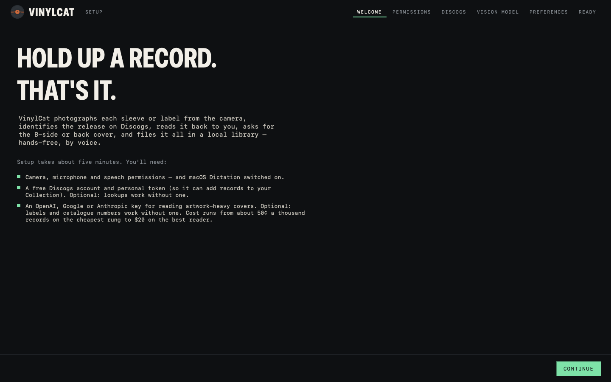

The app is not signed by Apple
VinylCat is ad-hoc signed on the machine that built it. It is not signed with an Apple Developer ID and it is not notarised. macOS will refuse to open it the first time. This is expected. The download is not broken and there is nothing wrong with the app. It is Gatekeeper doing its job on an unnotarised app. Follow the six steps and you are in.
Right-click → Open does not get round this on macOS 15 or later. That old workaround is gone. System Settings is the only way in.
Getting past Gatekeeper
- Drag VinylCat onto Applications
Open the DMG and drag the app onto the Applications folder shortcut in the same window.
- Double-click VinylCat. Click Done.
macOS says "Apple could not verify VinylCat is free of malware", with only a Done button. Click it.
Nothing has gone wrong. This step is required: it is what tells macOS that an app was blocked, which puts the button you need into System Settings.
- Open System Settings → Privacy & Security
Apple menu → System Settings, then Privacy & Security in the sidebar.
- Scroll all the way down to Security. Click Open Anyway.
You will see "VinylCat was blocked to protect your Mac." Click Open Anyway next to it.
That line only appears after step 2. If it isn't there, go back and double-click the app again.
- Authenticate, then Open Anyway again
Touch ID or your password if asked, then click Open Anyway once more in the confirmation dialog.
- VinylCat opens. You only do this once.
Every launch after this is a normal double-click.
Skipping all of the above would need a paid Apple Developer ID, $99 a year. VinylCat is free, so that is not happening. The six steps are the way in.
First-run setup, about five minutes
The app opens with a wizard: Welcome → Permissions → Discogs → Vision model → Preferences → Ready. It tests each piece as you go, and you can run it again any time from Settings.
- Permissions
The wizard asks for Camera, Microphone and Speech Recognition and checks that Dictation is switched on. Click Allow on each, once.
- Your Discogs token
Free, from discogs.com/settings/developers. Paste it in and test it. Without one the app still looks records up, at 25 a minute instead of 60, but cannot add them to your Collection.
Adding matches to your Discogs Collection is off until you switch it on, here or later in Settings. Until you do, VinylCat neither writes to nor reads from your Collection.
- Your Claude, OpenAI or Google key
Optional. Pick a reader and paste that provider's key; the account needs billing set up. Identifying a record runs from about a twentieth of a cent on Claude Haiku to two cents on Claude Opus, the default rung — the accuracy between them differs by three photos in a hundred, so start cheap. Without a key the app runs on local OCR and catalogue numbers only: good on labels, worse on artwork-heavy covers.
If Anthropic's
antCLI is signed in on this Mac, the Claude reader uses a short-lived token from it and stores no key at all. The wizard says which it found.

Drag the new one over the old one
The app checks this site at launch and every six hours; when a newer version is out an amber UPDATE chip appears in the top bar with what changed and a download button (Settings → About switches the check off, or skips a version). Replace VinylCat in Applications with the new one. Your catalogue and photos live in your own Library folder and are not touched. Gatekeeper may ask once more for a new build.
One folder, yours
VinylCat.sqlite the catalogue, evidence and verdicts Photos/ one JPEG per record, plus any extra shots keys.json your Discogs token and model key, 0600 (empty if the ant CLI supplies a token)
CSV exports and the feedback file go wherever you point them from the Library. Nothing is sent anywhere except the Discogs and model calls you set up, and one anonymous tick to vinyl-cat.com each time the app opens (the word “launch” and the version number, no IP kept, no identifier) so the developer can see whether anyone uses it. Settings → ABOUT → Count launches switches it off.
Settings → About → REPORT A PROBLEM, or REPORT on any record in the Library. Write a line, optionally tick the last 150 log lines and that scan's evidence, and PREVIEW shows the exact text before it goes. It is filed as an issue for the developer; anything key-shaped is masked first, and an email address is yours to add or leave out. If the site is unreachable it offers to save the report to your Desktop instead.